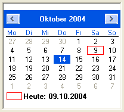

CalendarGadget()
语法
Result = CalendarGadget(#Gadget, x, y, Width, Height [, Date [, Flags]])概要
Create a calendar gadget in the current GadgetList. This gadget displays a month calendar and lets the user select a date.
参数
#Gadget A number to identify the new gadget. #PB_Any can be used to auto-generate this number. x, y, Width, Height The position and dimensions of the new gadget. Date (optional) The initial date to set. The default is the current date. Flags (optional) This parameter can be set to #PB_Calendar_Borderless to create a gadget without a border.
返回值
Returns nonzero on success and zero on failure. If #PB_Any was used as the #Gadget parameter then the return-value is the auto-generated gadget number on success.
备注
The dates used by this gadget and the functions for it use the same date format as the date library.
A 'mini help' can be added to this gadget using GadgetToolTip().
The following functions can be used for this gadget:
- SetGadgetState(): Set the currently displayed date.
- GetGadgetState(): Get the currently displayed date.
- SetGadgetItemState(): Make a specific date appear bold (Windows only).
- GetGadgetItemState(): Get the bold state of a specific date (Windows only).
- SetGadgetAttribute(): With the following attributes:#PB_Calendar_Minimum: Set the minimum selectable date #PB_Calendar_Maximum: Set the maximum selectable date in this gadget.- GetGadgetAttribute(): With the following attributes:#PB_Calendar_Minimum: Get the minimum selectable date #PB_Calendar_Maximum: Get the maximum selectable date of this gadget.
This gadget supports the SetGadgetColor() and GetGadgetColor() functions with the following values as 'ColorType':#PB_Gadget_BackColor : backgroundcolor #PB_Gadget_FrontColor : textcolor for displayed days (not supported on Windows Vista+) #PB_Gadget_TitleBackColor : backgroundcolor of the month title (not supported on Windows Vista+) #PB_Gadget_TitleFrontColor: textcolor of the month title (not supported on Windows Vista+) #PB_Gadget_GrayTextColor : textcolor for days not of the current month (not supported on Windows Vista+)
示例
If OpenWindow(0, 0, 0, 220, 200, "CalendarGadget", #PB_Window_SystemMenu | #PB_Window_ScreenCentered) CalendarGadget(0, 10, 10, 200, 180) Repeat Until WaitWindowEvent() = #PB_Event_CloseWindow EndIf

参阅
SetGadgetState(), GetGadgetState(), SetGadgetItemState(), GetGadgetItemState(), SetGadgetAttribute(), GetGadgetAttribute(), SetGadgetColor(), GetGadgetColor(), DateGadget(), Date(), FormatDate()
已支持操作系统
所有